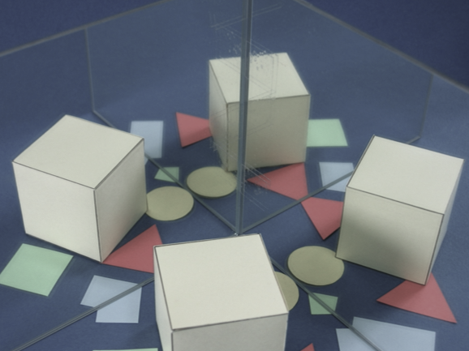

إذا أخذنا مرايا فعلية، فلا يمكن للصور التي تعكسها هذه المرايا أن تتداخل مع بعضها. بل في كل موقع، يوجد بالضبط صورة معكوسة واحدة. عند الطرف، حيث تلتقي المرآتان ، يحدث ما نسميه "خط الكسر" حين لا تكون الزاوية بين المرايا قاسماً لـ180 درجة. في المحاكاة على اليمين، يمكن التحكم بالزاوية بواسطة المؤشر المتزحلق.
يمكنك إختيار الجسم المعكوس بالنقر على الأيقونة الصغيرة على اليمين. يمكن التحكم بموقع الأجسام بتغيير النقط الصغيرة الخضراء.
|

|
صور من زوج مرايا فعلية في حال زاوية 90 درجة وزاوية 85 درجة.